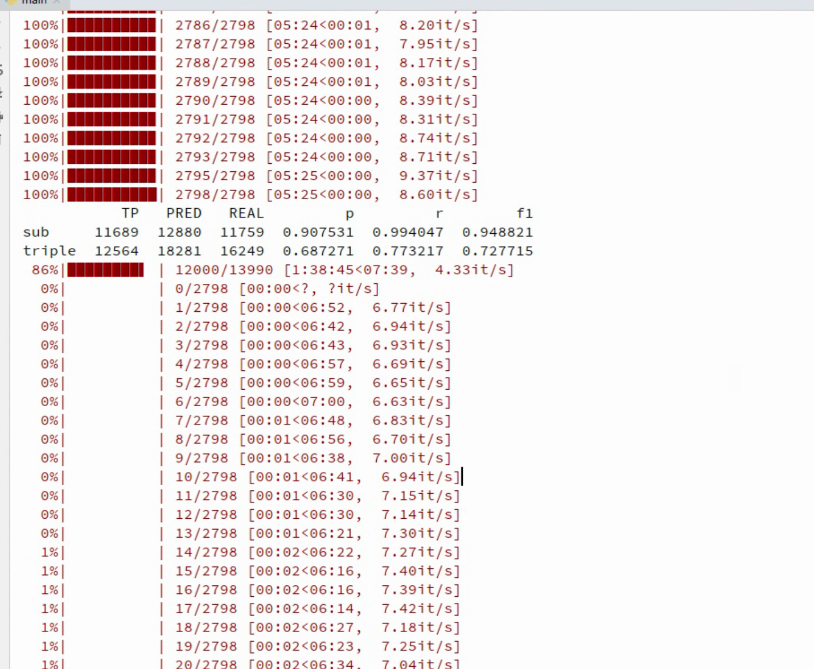

4.4 Casrel模型搭建与训练
Casrel关系抽取模型搭建¶
学习目标¶
- 掌握基于Casrel模型搭建的代码实现.
- 掌握模型的训练,验证,测试的代码实现.
- 掌握使用模型预测代码的实现.
Casrel模型搭建¶
- 本项目中Casrel模型搭建的步骤如下:
- 第一步: 编写模型类的代码
- 第二步: 编写工具类函数,训练函数,验证函数,测试函数
- 第三步: 编写使用模型预测代码的实现.
第一步: 编写模型类的代码¶
- 文本编码采用的是BERT预训练模型
- 第一步: 实现CasRel类代码.
- 代码路径: /home/ec2-user/Casrel_RE/relationship_extract/codes/model/CasrelModel.py
# coding:utf-8
import torch
import torch.nn as nn
from transformers import BertModel, AdamW
from codes.config import *
class CasRel(nn.Module):
def __init__(self, conf):
super().__init__()
self.bert = BertModel.from_pretrained(conf.bert_path)
# 定义第一个线性层，来判断主实体的头部位置
self.sub_heads_linear = nn.Linear(conf.bert_dim, 1)
# 定义第二个线性层，来判断主实体的尾部位置
self.sub_tails_linear = nn.Linear(conf.bert_dim, 1)
# 定义第三个线性层，来判断客实体的头部位置以及关系类型
self.obj_heads_linear = nn.Linear(conf.bert_dim, conf.num_rel)
# 定义第四个线性层，来判断客实体的尾部位置以及关系类型
self.obj_tails_linear = nn.Linear(conf.bert_dim, conf.num_rel)
def get_encoded_text(self, token_ids, mask):
encoded_text = self.bert(token_ids, attention_mask=mask)[0]
return encoded_text
def get_subs(self, encoded_text):
pre_sub_heads = torch.sigmoid(self.sub_heads_linear(encoded_text))
pre_sub_tails = torch.sigmoid(self.sub_tails_linear(encoded_text))
return pre_sub_heads, pre_sub_tails
def get_objs_for_specific_sub(self, sub_head2tail, sub_len, encoded_text):
'''
将subject实体信息融合原始句子中：将主实体字向量实现平均，然后加在当前句子的每一个字向量上，进行计算
:param sub_head2tail:shape-->【16，1, 200】
:param sub_len:shape--->[16,1]
:param encoded_text:.shape[16，200，768]
:return:
pred_obj_heads-->shape []
pre_obj_tails-->shape []
'''
sub = torch.matmul(sub_head2tail, encoded_text)# 将主实体特征和编码后的文本进行融合
sub_len = sub_len.unsqueeze(1) # 主实体长度（扩维）
sub = sub / sub_len # 平均主实体信息
encoded_text = encoded_text + sub #将处理后的实体特征和原始编码后的文本进行融合
pred_obj_heads = torch.sigmoid(self.obj_heads_linear(encoded_text))
pre_obj_tails = torch.sigmoid(self.obj_tails_linear(encoded_text))
return pred_obj_heads, pre_obj_tails
def forward(self, input_ids, mask, sub_head2tail, sub_len):
'''
:param input_ids: shape-->[16, 200]
:param mask: shape-->[16, 200]
:param sub_head2tail: shape-->[16, 200]
:param sub_len: shape-->[16, 1]
:return:
'''
# todo: encode_text.shape--->[16,200,768]
encoded_text = self.get_encoded_text(input_ids, mask)
pred_sub_heads, pre_sub_tails = self.get_subs(encoded_text)
sub_head2tail = sub_head2tail.unsqueeze(1)
pred_obj_heads, pre_obj_tails =self.get_objs_for_specific_sub(sub_head2tail, sub_len,encoded_text)
result_dict = {'pred_sub_heads': pred_sub_heads,
'pred_sub_tails': pre_sub_tails,
'pred_obj_heads': pred_obj_heads,
'pred_obj_tails': pre_obj_tails,
'mask': mask}
return result_dict
def compute_loss(self,
pred_sub_heads, pred_sub_tails,
pred_obj_heads, pred_obj_tails,
mask,
sub_heads, sub_tails,
obj_heads, obj_tails):
'''
计算损失
:param pred_sub_heads:[16, 200, 1]
:param pred_sub_tails:[16, 200, 1]
:param pred_obj_heads:[16, 200, 18]
:param pred_obj_tails:[16, 200, 18]
:param mask: shape-->[16, 200]
:param sub_heads: shape-->[16, 200]
:param sub_tails: shape-->[16, 200]
:param obj_heads: shape-->[16, 200, 18]
:param obj_tails: shape-->[16, 200, 18]
:return:
'''
# todo:sub_heads.shape,sub_tails.shape, mask-->[16, 200]
# todo:obj_heads.shape,obj_tails.shape-->[16, 200, 18]
rel_count = obj_heads.shape[-1]
rel_mask = mask.unsqueeze(-1).repeat(1, 1, rel_count)
loss_1 = self.loss(pred_sub_heads, sub_heads, mask)
loss_2 = self.loss(pred_sub_tails, sub_tails, mask)
loss_3 = self.loss(pred_obj_heads, obj_heads, rel_mask)
loss_4 = self.loss(pred_obj_tails, obj_tails, rel_mask)
return loss_1 + loss_2 + loss_3 + loss_4
def loss(self, pred, gold, mask):
pred = pred.squeeze(-1)
los = nn.BCELoss(reduction='none')(pred, gold)
if los.shape != mask.shape:
mask = mask.unsqueeze(-1)
los = torch.sum(los * mask) / torch.sum(mask)
return los
def load_model(conf):
device = conf.device
model = CasRel(conf)
model.to(device)
# 因为本次模型借助BERT做fine_tuning， 因此需要对模型中的大部分参数进行L2正则处理防止过拟合，包括权重w和偏置b
# prepare optimzier
# named_parameters()获取模型中的参数和参数名字
param_optimizer = list(model.named_parameters())
print(f'param_optimizer--->{param_optimizer}')
no_decay = ["bias", "LayerNorm.bias", "LayerNorm.weight"] # no_decay中存放不进行权重衰减的参数{因为bert官方代码对这三项免于正则化}
# any()函数用于判断给定的可迭代参数iterable是否全部为False，则返回False，如果有一个为True，则返回True
# 判断param_optimizer中所有的参数。如果不在no_decay中，则进行权重衰减;如果在no_decay中，则不进行权重衰减
optimizer_grouped_parameters = [
{"params": [p for n, p in param_optimizer if not any(nd in n for nd in no_decay)], "weight_decay": 0.01},
{"params": [p for n, p in param_optimizer if any(nd in n for nd in no_decay)], "weight_decay": 0.0}]
optimizer = AdamW(optimizer_grouped_parameters, lr=conf.learning_rate, eps=10e-8)
# 是否需要对bert进行warm_up。这里默认不进行
sheduler = None
return model, optimizer, sheduler, device
if __name__ == '__main__':
conf = Config()
# casrel = CasRel(conf)
# print(f'模型的架构--->{casrel}')
load_model(conf)
第二步: 编写工具类函数,训练函数,验证函数,测试函数¶
- 注意：工具类函数需要在训练、测试、评估过程中使用；训练函数, 验证函数两者在一个脚本，测试函数单独一个脚本. 此外, 因为验证函数和测试函数一致，因此只写一个即可.
- 第一步: 实现utils函数.
- 代码路径: /home/ec2-user/Casrel_RE/relationship_extract/codes/utils/process.py
# coding:utf-8
from codes.config import *
import torch
from random import choice
from collections import defaultdict
conf = Config()
def extract_sub(pred_sub_heads, pred_sub_tails):
'''
:param pred_sub_heads: 模型预测出的主实体开头位置
:param pred_sub_tails: 模型预测出的主实体尾部位置
:return: subs列表里面对应的所有实体【head, tail】
'''
subs = []
# 统计预测出所有值为1的元素索引位置
heads = torch.arange(0, len(pred_sub_heads), device=conf.device)[pred_sub_heads == 1]
tails = torch.arange(0, len(pred_sub_tails), device=conf.device)[pred_sub_tails == 1]
for head, tail in zip(heads, tails):
if tail >= head:
subs.append((head.item(), tail.item()))
return subs
def extract_obj_and_rel(obj_heads, obj_tails):
'''
:param obj_heads: 模型预测出的从实体开头位置以及关系类型
:param obj_tails: 模型预测出的从实体尾部位置以及关系类型
:return: obj_and_rels：元素形状：(rel_index, start_index, end_index)
'''
obj_heads = obj_heads.T
obj_tails = obj_tails.T
rel_count = obj_heads.shape[0]
obj_and_rels = []
for rel_index in range(rel_count):
obj_head = obj_heads[rel_index]
obj_tail = obj_tails[rel_index]
objs = extract_sub(obj_head, obj_tail)
if objs:
for obj in objs:
start_index, end_index = obj
obj_and_rels.append((rel_index, start_index, end_index))
return obj_and_rels
def convert_score_to_zero_one(tensor):
'''
以0.5为阈值，大于0.5的设置为1，小于0.5的设置为0
'''
tensor[tensor >= 0.5] = 1
tensor[tensor < 0.5] = 0
return tensor
- 导入实现训练函数,验证函数,测试函数的工具包
# coding:utf-8
from model.CasrelModel import *
from utils.process import *
from utils.data_loader import *
from config import *
import pandas as pd
from tqdm import tqdm
- 第二步: 编写训练与验证函数.
- 代码路径: /home/ec2-user/Casrel_RE/relationship_extract/codes/train.py
- 注意: 验证函数的目的是在训练过程中，保存F1值最好的模型状态，因此嵌套在训练过程中
def model2train(model, train_iter, dev_iter, optimizer, conf):
epochs = conf.epochs
best_triple_f1 = 0
for epoch in range(epochs):
train_epoch(model, train_iter, dev_iter, optimizer, best_triple_f1, epoch)
torch.save(model.state_dict(), '../save_model/last_model.pth')
def train_epoch(model, train_iter, dev_iter, optimizer, best_triple_f1, epoch):
for step, (inputs, labels) in enumerate(tqdm(train_iter)):
model.train()
logist = model(**inputs)
loss = model.compute_loss(**logist, **labels)
model.zero_grad()
loss.backward()
optimizer.step()
if step % 1500 == 0:
torch.save(model.state_dict(),
'../save_model/epoch_%s_model_%s.pth' % (epoch, step))
results = model2dev(model, dev_iter)
print(results[-1])
if results[-2] > best_triple_f1:
best_triple_f1 = results[-2]
torch.save(model.state_dict(), '../save_model/best_f1.pth')
print('epoch:{},'
'step:{},'
'sub_precision:{:.4f}, '
'sub_recall:{:.4f}, '
'sub_f1:{:.4f}, '
'triple_precision:{:.4f}, '
'triple_recall:{:.4f}, '
'triple_f1:{:.4f},'
'train loss:{:.4f}'.format(epoch,
step,
results[0],
results[1],
results[2],
results[3],
results[4],
results[5],
loss.item()))
return best_triple_f1
- 第三步: 编写验证函数.
- 代码路径: /home/ec2-user/Casrel_RE/relationship_extract/codes/train.py
def model2dev(model, dev_iter):
'''
验证模型效果
:param model:
:param dev_iter:
:return:
'''
model.eval()
# 定义一个df，来展示模型的指标。
df = pd.DataFrame(columns=['TP', 'PRED', "REAL", 'p', 'r', 'f1'], index=['sub', 'triple'])
df.fillna(0, inplace=True)
for inputs, labels in tqdm(dev_iter):
logist = model(**inputs)
pred_sub_heads = convert_score_to_zero_one(logist['pred_sub_heads'])
pred_sub_tails = convert_score_to_zero_one(logist['pred_sub_tails'])
sub_heads = convert_score_to_zero_one(labels['sub_heads'])
sub_tails = convert_score_to_zero_one(labels['sub_tails'])
batch_size = inputs['input_ids'].shape[0]
obj_heads = convert_score_to_zero_one(labels['obj_heads'])
obj_tails = convert_score_to_zero_one(labels['obj_tails'])
pred_obj_heads = convert_score_to_zero_one(logist['pred_obj_heads'])
pred_obj_tails = convert_score_to_zero_one(logist['pred_obj_tails'])
for batch_index in range(batch_size):
pred_subs = extract_sub(pred_sub_heads[batch_index].squeeze(),
pred_sub_tails[batch_index].squeeze())
true_subs = extract_sub(sub_heads[batch_index].squeeze(),
sub_tails[batch_index].squeeze())
pred_ojbs = extract_obj_and_rel(pred_obj_heads[batch_index],
pred_obj_tails[batch_index])
true_objs = extract_obj_and_rel(obj_heads[batch_index],
obj_tails[batch_index])
df['PRED']['sub'] += len(pred_subs)
df['REAL']['sub'] += len(true_subs)
for true_sub in true_subs:
if true_sub in pred_subs:
df['TP']['sub'] += 1
df['PRED']['triple'] += len(pred_ojbs)
df['REAL']['triple'] += len(true_objs)
for true_obj in true_objs:
if true_obj in pred_ojbs:
df['TP']['triple'] += 1
df.loc['sub', 'p'] = df['TP']['sub'] / (df['PRED']['sub'] + 1e-9)
df.loc['sub', 'r'] = df['TP']['sub'] / (df['REAL']['sub'] + 1e-9)
df.loc['sub', 'f1'] = 2 * df['p']['sub'] * df['r']['sub'] / (df['p']['sub'] +
df['r']['sub'] +
1e-9)
sub_precision = df['TP']['sub'] / (df['PRED']['sub'] + 1e-9)
sub_recall = df['TP']['sub'] / (df['REAL']['sub'] + 1e-9)
sub_f1 = 2 * sub_precision * sub_recall / (sub_precision + sub_recall + 1e-9)
df.loc['triple', 'p'] = df['TP']['triple'] / (df['PRED']['triple'] + 1e-9)
df.loc['triple', 'r'] = df['TP']['triple'] / (df['REAL']['triple'] + 1e-9)
df.loc['triple', 'f1'] = 2 * df['p']['triple'] * df['r']['triple'] / (
df['p']['triple'] + df['r']['triple'] + 1e-9)
triple_precision = df['TP']['triple'] / (df['PRED']['triple'] + 1e-9)
triple_recall = df['TP']['triple'] / (df['REAL']['triple'] + 1e-9)
triple_f1 = 2 * triple_precision * triple_recall / (
triple_precision + triple_recall + 1e-9)
return sub_precision, sub_recall, sub_f1, triple_precision, triple_recall, triple_f1, df
- 第四步: 编写测试函数.
- 代码路径：/home/ec2-user/Casrel_RE/relationship_extract/codes/test.py
def model2test(model, test_iter):
'''
测试模型效果
:param model:
:param test_iter:
:return:
'''
model.eval()
# 定义一个df，来展示模型的指标。
df = pd.DataFrame(columns=['TP', 'PRED', "REAL", 'p', 'r', 'f1'], index=['sub', 'triple'])
df.fillna(0, inplace=True)
with torch.no_grad():
for inputs, labels in tqdm(test_iter):
logist = model(**inputs)
pred_sub_heads = convert_score_to_zero_one(logist['pred_sub_heads'])
pred_sub_tails = convert_score_to_zero_one(logist['pred_sub_tails'])
sub_heads = convert_score_to_zero_one(labels['sub_heads'])
sub_tails = convert_score_to_zero_one(labels['sub_tails'])
batch_size = inputs['input_ids'].shape[0]
obj_heads = convert_score_to_zero_one(labels['obj_heads'])
obj_tails = convert_score_to_zero_one(labels['obj_tails'])
pred_obj_heads = convert_score_to_zero_one(logist['pred_obj_heads'])
pred_obj_tails = convert_score_to_zero_one(logist['pred_obj_tails'])
for batch_index in range(batch_size):
pred_subs = extract_sub(pred_sub_heads[batch_index].squeeze(),
pred_sub_tails[batch_index].squeeze())
true_subs = extract_sub(sub_heads[batch_index].squeeze(),
sub_tails[batch_index].squeeze())
pred_ojbs = extract_obj_and_rel(pred_obj_heads[batch_index],
pred_obj_tails[batch_index])
true_objs = extract_obj_and_rel(obj_heads[batch_index],
obj_tails[batch_index])
df['PRED']['sub'] += len(pred_subs)
df['REAL']['sub'] += len(true_subs)
for true_sub in true_subs:
if true_sub in pred_subs:
df['TP']['sub'] += 1
df['PRED']['triple'] += len(pred_ojbs)
df['REAL']['triple'] += len(true_objs)
for true_obj in true_objs:
if true_obj in pred_ojbs:
df['TP']['triple'] += 1
df.loc['sub', 'p'] = df['TP']['sub'] / (df['PRED']['sub'] + 1e-9)
df.loc['sub', 'r'] = df['TP']['sub'] / (df['REAL']['sub'] + 1e-9)
df.loc['sub', 'f1'] = 2 * df['p']['sub'] * df['r']['sub'] / (df['p']['sub'] + df['r']['sub'] + 1e-9)
df.loc['triple', 'p'] = df['TP']['triple'] / (df['PRED']['triple'] + 1e-9)
df.loc['triple', 'r'] = df['TP']['triple'] / (df['REAL']['triple'] + 1e-9)
df.loc['triple', 'f1'] = 2 * df['p']['triple'] * df['r']['triple'] / (
df['p']['triple'] + df['r']['triple'] + 1e-9)
return df
第三步: 编写模型预测函数¶
- 使用训练好的模型，随机抽取文本进行关系抽取
- 代码位置: /home/ec2-user/Casrel_RE/relationship_extract/codes/predict.py
# coding:utf-8
from model.CasrelModel import *
from utils.process import *
conf = Config()
def load_model(model_path):
# 实例化模型
mymodel = CasRel(conf).to(conf.device)
mymodel.load_state_dict(torch.load(model_path))
return mymodel
def get_inputs(sample, model):
text = conf.tokenizer(sample)
input_ids = torch.tensor([text['input_ids']]).to(conf.device)
mask = torch.tensor([text['attention_mask']]).to(conf.device)
# 初始化值
seq_len = len(text['input_ids'])
inner_sub_head2tail = torch.zeros(seq_len)
inner_sub_len = torch.tensor([1], dtype=torch.float)
# 获取模型预测的实体位置信息
model.eval()
with torch.no_grad():
# 先利用模型获取主实体的位置信息
encoded_text = model.get_encoded_text(input_ids, mask)
sub_heads, sub_tails = model.get_subs(encoded_text)
pred_sub_heads = convert_score_to_zero_one(sub_heads)
pred_sub_tails = convert_score_to_zero_one(sub_tails)
# 获取主实体索引位置信息
pred_subs = extract_sub(pred_sub_heads.squeeze(), pred_sub_tails.squeeze())
# 模型可能没识别出实体
if len(pred_subs) != 0:
sub_head_idx = pred_subs[0][0]
sub_tail_idx = pred_subs[0][1]
# 获取主体长度以及对主体位置全部赋值为1
inner_sub_head2tail[sub_head_idx:sub_tail_idx + 1] = 1
inner_sub_len = torch.tensor([sub_tail_idx + 1 - sub_head_idx], dtype=torch.float)
sub_len = inner_sub_len.unsqueeze(0).to(conf.device)
sub_head2tail = inner_sub_head2tail.unsqueeze(0).to(conf.device)
inputs = {'input_ids': input_ids,
'mask': mask,
'sub_head2tail': sub_head2tail,
'sub_len': sub_len}
return inputs, model
def model2predict(sample, model):
with open(conf.rel_dict_path, 'r', encoding='utf-8')as fr:
rel_id2word = json.load(fr)
inputs, model = get_inputs(sample, model)
logist = model(**inputs)
print(f"logist['pred_sub_heads']-->{logist['pred_sub_heads'].shape}")
print(f"logist['pred_obj_heads']-->{logist['pred_obj_heads'].shape}")
pred_sub_heads = convert_score_to_zero_one(logist['pred_sub_heads'])
pred_sub_tails = convert_score_to_zero_one(logist['pred_sub_tails'])
pred_obj_heads = convert_score_to_zero_one(logist['pred_obj_heads'])
pred_obj_tails = convert_score_to_zero_one(logist['pred_obj_tails'])
new_dict = {}
spo_list = []
ids = inputs['input_ids'][0]
text_list = conf.tokenizer.convert_ids_to_tokens(ids)
sentence = ''.join(text_list[1: -1])
pred_subs = extract_sub(pred_sub_heads[0].squeeze(), pred_sub_tails[0].squeeze())
pred_objs = extract_obj_and_rel(pred_obj_heads[0], pred_obj_tails[0])
if len(pred_subs) == 0 or len(pred_objs) == 0:
print('没有识别出结果')
return {}
if len(pred_objs) > len(pred_subs):
pred_subs = pred_subs * len(pred_objs)
for sub, rel_obj in zip(pred_subs, pred_objs):
sub_spo = {}
sub_head, sub_tail = sub
sub = ''.join(text_list[sub_head: sub_tail + 1])
if '[PAD]' in sub:
continue
sub_spo['subject'] = sub
relation = rel_id2word[str(rel_obj[0])]
obj_head, obj_tail = rel_obj[1], rel_obj[2]
obj = ''.join(text_list[obj_head: obj_tail + 1])
if '[PAD]' in obj:
continue
sub_spo['predicate'] = relation
sub_spo['object'] = obj
spo_list.append(sub_spo)
new_dict['text'] = sentence
new_dict['spo_list'] = spo_list
return new_dict
if __name__ == '__main__':
sample = "《人间》是王菲演唱歌曲"
model_path = '../save_model/last_model.pth'
mymodel = load_model(model_path)
model2predict(sample, mymodel)
- 调用:
cd /home/Desktop/relationship_extract/codes/
# 实现模型训练
python train.py
- 输出结果:

- 结论: Casrel模型在训练集上的表现是F1: 72.7%
小节总结¶
- 本小节实现了基于Casrel模型的构建, 并完成了训练和测试评估.